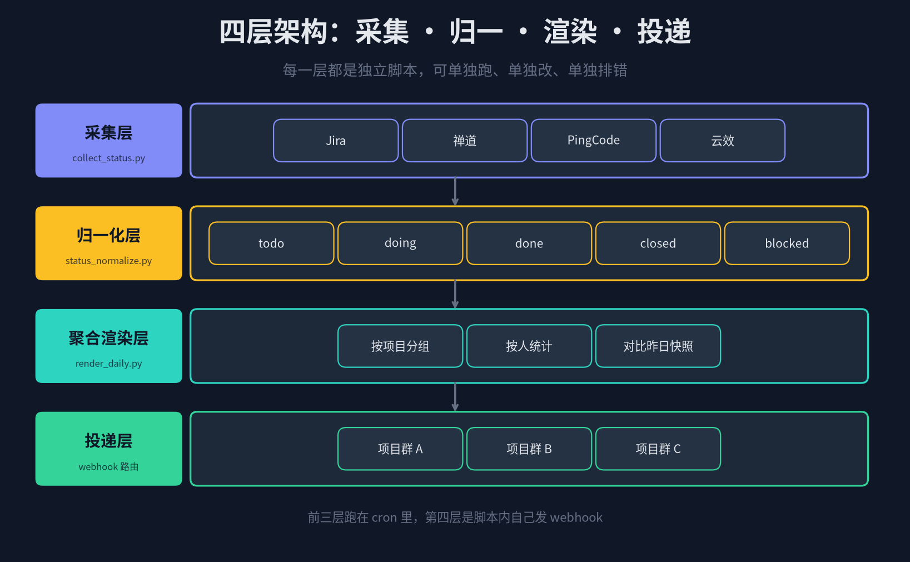
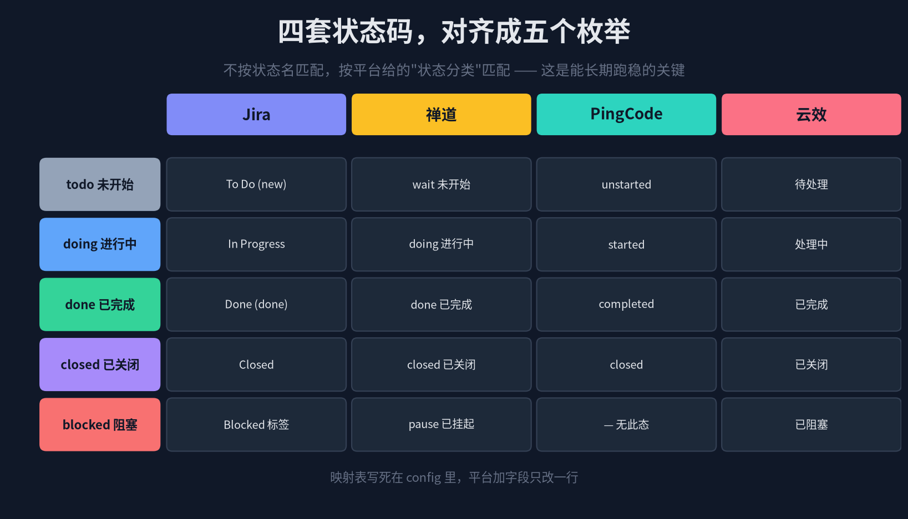
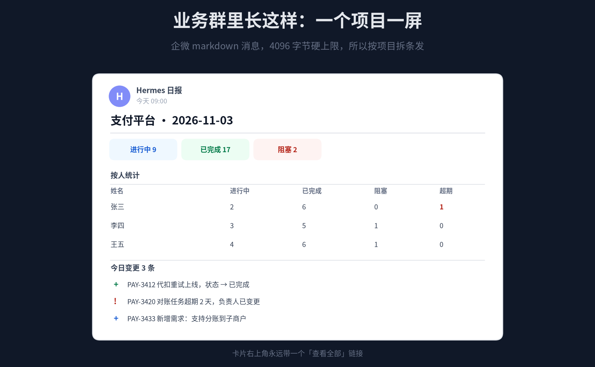
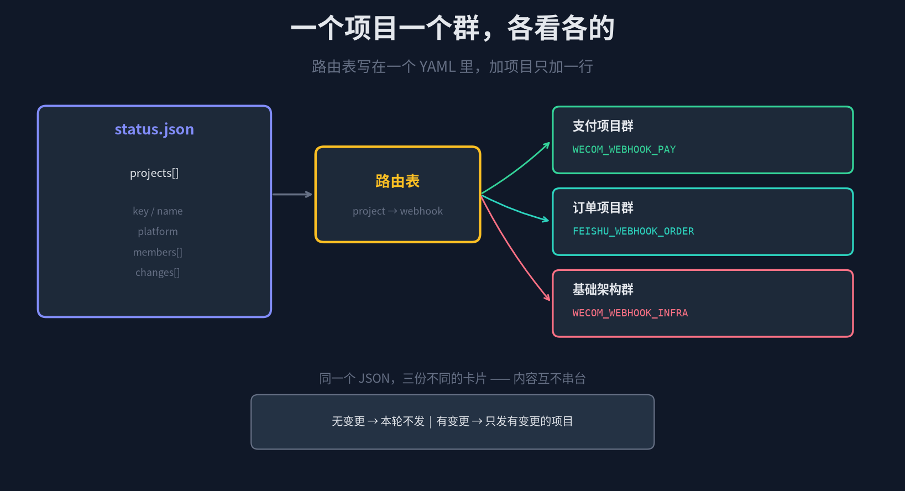

四个研发平台，二十个项目
每天早上九点自己走进各自的群
先说一个很常见的早间动作：
· 打开 Jira，把 8 个项目的看板逐个翻一遍，数一数谁手上还有几个没动
· 切到禅道，另 5 个项目，状态码叫法和 Jira 完全不一样
· 再登 PingCode 和云效，剩下几个项目散在这两个地方
· 凭记忆整理成一段话，挨个贴到七个项目群里
这套动作每天吃掉 40 分钟，而且做久了必然会偷工减料——昨天推到群里的是不是复制前天改个日期，自己心里清楚。
这篇要解决的正是这个：让 Hermes 的定时任务在每天固定时刻，把四个平台的状态拉下来、对齐成同一套语言、按项目和人统计好、再自动推到各自的群。
全程零人工，只在"有变化的时候"才说话。
1
概念：Hermes 的 Cron 到底是个什么东西
Hermes 的定时任务不是系统级的 crontab，也不是独立的调度服务，它挂在 Gateway 守护进程里。
Gateway 每 60 秒 tick 一次，读 ~/.hermes/cron/jobs.json，比对每个任务的 next_run_at，把到期的任务拎出来，在全新的隔离会话里执行，跑完投递结果、写回下次运行时间。
所以它有个前提条件，很多人第一次用会踩：Gateway 必须活着。`hermes gateway` 没起、或者起了但进程挂了，cron 一分钟都不会跑。
三套时间写法，挑一种顺手的
一次性 — `30m`、`2h`，多久之后跑一次就完事
固定间隔 — `every 30m`，每半小时一次，不看钟点
标准 cron — `0 9 * * *`，每天早上九点整，跟 Linux crontab 一样的五段式
两种执行模式，这是省钱的关键
Agent 模式（默认）：起一个完整 AIAgent 会话，能调工具、能推理、能写自然语言。适合"需要判断和归纳"的任务。
无 Agent 模式（`--no-agent --script xxx.sh`）：直接执行脚本，把 stdout 原样当消息投递，零 token、零模型调用、零 provider 回退。适合"数据搬运和格式化"的任务。
我们这个场景——拉接口、算统计、拼字符串、发 webhook——全是确定性计算，一句话都不需要 LLM 生成。所以主链路走无 Agent 模式，一天跑几十次也不花一分钱。
投递目标：一个参数决定发到哪
--deliver local # 只存本地 ~/.hermes/cron/output/
--deliver wecom # 企微主频道
--deliver feishu # 飞书主频道
--deliver wecom,feishu # 扇出到两个平台
--deliver all # 所有已连的主频道，触发时才解析
注意这里只有"主频道"这个概念。我们后面要按项目分群推送，靠的不是 `--deliver`，而是脚本内部自己发 webhook——原因在第五章会讲清楚。
2
架构：为什么拆成四层
最容易写废的做法，是把"拉数据 + 算统计 + 拼消息 + 发群"全塞进一个 200 行的脚本，挂一个 cron 上。第一版能跑，第二个月就没人敢改了。
拆成四层的好处很朴素：每一层都能单独跑。采集挂了不影响渲染，渲染模板想换配色不用碰接口，加个项目只改路由表一行。

图 1 · 四层架构：采集 → 归一 → 聚合渲染 → 投递
采集层：只做一件事，调四个平台的接口，把原始数据落到 ~/.hermes/state/raw/。不转换、不判断、不改名。
归一化层：把四套完全不同的状态码翻译成统一枚举，输出 status.json。
聚合渲染层：按项目分组、按人汇总、跟昨天快照做 diff，生成每个项目一段 Markdown。
投递层：查路由表，把每个项目的卡片 POST 到对应的群机器人 webhook。
关键设计：采集和渲染跑两个不同频率的 cron。采集每 30 分钟一次（状态会变），渲染每天早上九点一次（人只需要看一次）。中间靠 status.json 这个文件解耦。
3
归一：四套状态码对齐成五个枚举
这是整篇文章技术含量最高、也最容易做错的地方。
四个平台对"一个任务走到哪了"这件事，各说各话：
Jira 叫 To Do / In Progress / Done；禅道叫 wait / doing / done / pause / closed；PingCode 用 unstarted / started / completed / closed；云效用中文的 待处理 / 处理中 / 已完成 / 已关闭。

图 2 · 四平台状态码映射矩阵
第一个坑：不要按状态名匹配
新手最常见写法是 `if status == "Done": ...`。这套代码上线第三天就会崩——因为公司的 Jira 管理员改了工作流，把 "Done" 改成 "Resolved"，或者加了一个 "待验证" 的中间态。
正确做法是匹配平台提供的"状态分类"（statusCategory），而不是状态名。Jira 的 statusCategory 永远是三个值：`new`、`indeterminate`、`done`，不管你们公司把列名改成什么花名。PingCode 的 `state_type`、云效的 `statusGroupIdentifier` 同理。
第二个坑：closed 和 done 不是一回事
在大多数工作流里，"已完成"是研发填了结果，还会被测试或 PM 验收；"已关闭"是验收通过或者被驳回终止。统计时有本质区别——已完成但未关闭的，往往就是卡在验收环节的，这才是需要暴露给项目群看的东西。
所以归一枚举设计成五个：todo / doing / done / closed / blocked。blocked 单独拎出来，因为它才是需要人介入的状态。
映射表写死在配置里，别藏进代码逻辑：
# ~/.hermes/config/status_map.yaml
jira:
new: todo
indeterminate: doing
done: done # resolution 为空才算 closed
blocked_flag: true # 带 Blocked 标签 → blocked
zentao:
wait: todo
doing: doing
done: done
closed: closed
pause: blocked
cancel: closed
pingcode:
unstarted: todo
started: doing
completed: done
closed: closed
yunxiao:
待处理: todo
处理中: doing
已完成: done
已关闭: closed
已阻塞: blocked
平台加字段、公司改工作流，只改这个 YAML 的一行，脚本一行都不用动。这才是"能长期跑稳"的设计。
4
聚合：按项目分组，按人统计
归一之后，所有数据长成一个样子了。接下来按两个维度切：项目决定发给谁，人决定内容里写什么。
统一的数据结构
{
"date": "2026-11-03",
"projects": [
{
"key": "PAY",
"name": "支付平台",
"platform": "jira",
"group": "支付项目群",
"summary": {
"total": 42, "todo": 11, "doing": 9,
"done": 17, "closed": 5, "blocked": 0
},
"members": [
{"name": "张三", "doing": 2, "done": 6,
"blocked": 0, "overdue": 1},
{"name": "李四", "doing": 3, "done": 5,
"blocked": 1, "overdue": 0}
],
"changes": [
{"id": "PAY-3412", "from": "doing", "to": "done"},
{"id": "PAY-3420", "flag": "overdue_2d"}
]
}
]
}
三个统计口径，值得单独说
① 按人统计要算"超期"，不只是算"数量"。一个手上 8 个任务但全都按期的人，跟一个手上 3 个却全部超期的人，是完全不同的信号。超期口径用 当前时间 > due_date 且 状态不是 done/closed。
② 未分配的人单独列出来。所有项目里 `assignee` 为空的工作项，汇总成一行"未分配 N 个"。这一行往往是日报里最有价值的信息——没人认领的需求比 stalled 的需求更危险。
③ 统计要跨平台合并同一批人。张三在 Jira 叫 `zhangsan`，禅道叫 `张三`，PingCode 叫 `zhangsan@corp.com`。必须维护一张人员映射表，否则同一个人会被拆成三个"团队"。这是很多自动日报做不好看的核心原因。
diff：只推有变化的项目
每天准时往群里推一份一模一样的日报，三周之后所有人都会屏蔽它。没人看的日报等于没发。
所以每次渲染前先读昨天的 status.json 快照，做一次结构 diff：
prev = load(~/.hermes/state/snapshot/yesterday.json)
today = load(~/.hermes/state/status.json)
for p in today.projects:
if diff(prev[p.key], p).is_empty():
continue # 这个项目今天没变化，不发
send_card(p)
实测下来，工作日平均 20 个项目里有 6–9 个会变，剩下十来个是安静的。这一条规则直接把群里的噪音降了七成。周五可以破例全发一次，让大家有个完整视图。
5
渲染：一条卡片塞进 4096 字节
数据齐了，现在把它变成人能一眼看懂的一段话。

图 3 · 群消息卡片：概览 → 按人 → 今日变更
硬约束：企微 markdown 上限 4096 字节
企微群机器人的 markdown 消息，content 字段实测上限在 4096 字节附近，超了直接返回 errcode 40058 或被静默截断。中文一个字占 3 字节，4096 字节大约只有 1300 个汉字。
所以一个项目一条消息，绝不把多个项目拼成一条。这既是技术限制，也正好符合"按项目分群推送"的产品逻辑——每个群只关心自己项目，不该看到别的项目的数字。
模板：三段式，越短越好
### 支付平台 · 2026-11-03
> 进行中 **9** · 已完成 **17** · 阻塞 **2** · 未分配 **3**
**按人统计**
| 姓名 | 进行中 | 已完成 | 阻塞 | 超期 |
| :-- | :--: | :--: | :--: | :--: |
| 张三 | 2 | 6 | 0 | **1** |
| 李四 | 3 | 5 | 1 | 0 |
| 王五 | 4 | 6 | 1 | 0 |
**今日变更 3 条**
> ✅ PAY-3412 代扣重试上线 → 已完成
> ❗ PAY-3420 对账任务超期 2 天，负责人已变更
> ➕ PAY-3433 新增需求：支持分账到子商户
[查看全部](https://jira.corp.com/projects/PAY)
三段的信息密度是刻意排的：
第一段只放四个数——三十秒扫完就知道这个项目今天健不健康。
第二段把超期标粗——需要单独找谁，一眼能定位。
第三段只列变更——不是列全部任务，是"跟昨天比动了什么"。人只关心动的东西。
如果成员超过 8 个人，按人那张表会撑爆 4096 字节。这时候只列超期和不阻塞的前五名，其余折叠成一句"另有 12 人共 34 个任务，详见链接"。宁可少写，也不能发出去被截断。
飞书的写法略有不同
飞书自定义机器人支持 `msg_type: "interactive"` 发卡片，也可以用 `"text"` 发纯文本。卡片的优势是可以加按钮，但 markdown 表格在飞书卡片里不渲染——得换成 `div` + `fields` 的双列布局。为了省事，同一套数据用两个模板函数，别指望一份 Markdown 通吃两个平台。
6
投递：路由表决定进哪个群
前面留了一个问题：为什么不用 `--deliver`，而是脚本里自己发 webhook？
因为 Hermes 的 `--deliver` 只能发到平台的"主频道"——一个平台只能指定一个 home chat。而我们的需求是二十个项目对应七个群，一条任务要分头投递。内置投递目标做不到这个粒度。

图 4 · 一份 JSON，三份不同卡片，互不串台
解法是把投递下沉到脚本里。cron 只负责"按时叫醒脚本"，脚本自己决定发给谁。这时候 cron 用 --deliver local，让它别管投递，stdout 存本地当审计日志就行。
路由表：一个 YAML 管所有群
# ~/.hermes/config/routes.yaml
groups:
支付项目群:
platform: wecom
webhook_env: WECOM_WEBHOOK_PAY
订单项目群:
platform: feishu
webhook_env: FEISHU_WEBHOOK_ORDER
基础架构群:
platform: wecom
webhook_env: WECOM_WEBHOOK_INFRA
projects:
PAY: 支付项目群
ORD: 订单项目群
INFRA: 基础架构群
webhook 地址本身走环境变量，不进仓库——这是最基本的安全意识。地址泄露等于任何人都能往你们群里发消息。
# ~/.hermes/.env
WECOM_WEBHOOK_PAY=https://qyapi.weixin.qq.com/cgi-bin/webhook/send?key=xxx
WECOM_WEBHOOK_INFRA=https://qyapi.weixin.qq.com/cgi-bin/webhook/send?key=yyy
FEISHU_WEBHOOK_ORDER=https://open.feishu.cn/open-apis/bot/v2/hook/zzz
发送代码就两段
def send_wecom(url, md):
# 企微 webhook：markdown 消息，上限 4096 字节
requests.post(url, json={"msgtype": "markdown",
"markdown": {"content": md}})
def send_feishu(url, md):
# 飞书自定义机器人
requests.post(url, json={"msg_type": "text",
"content": {"text": md}})
注意企微 webhook 有个频率限制：每个机器人每分钟最多 20 条。二十个项目一次性全发会触发限流，脚本里加个 1 秒的 sleep，或者串行发、失败重试两次就够。
另外，webhook 不需要 Hermes 的 Gateway 就连着企微——它就是一个普通 HTTP 地址。这意味着渲染和投递可以在完全独立的机器上跑，只要 cron 能调起来就行。
7
配置与使用：从零到跑起来
第一步：确认 Gateway 活着
hermes gateway install # 装成用户服务，开机自启
hermes cron status # 看调度器是否 alive
hermes cron status 会告诉你三件事：gateway 进程在不在、ticker 心跳还跳动、上一次 tick 是什么时候。这三项有任何一项异常，cron 就不会跑，先修这个再看别的。
第二步：把三个脚本放好
~/.hermes/scripts/
├── collect_status.py # 拉四平台 → raw/*.json
├── status_normalize.py # raw → status.json
└── render_daily.py # status.json → 分群推送
先手动跑一遍，确认每一步的产物对：
python3 collect_status.py
python3 status_normalize.py
cat ~/.hermes/state/status.json | head -40
python3 render_daily.py --dry-run # 只打印不发
`--dry-run` 这个开关一定要先加。第一次就把二十条消息发到七个群，一旦模板写错了，全公司都能看见你的 bug。先 dry-run 把输出打到终端，确认排版没问题再上真发。
第三步：挂两个 cron
# 每 30 分钟采一次，零 token
hermes cron create "every 30m" \
--no-agent --script collect_status.py \
--deliver local --name "四平台状态采集"
# 每天 9:00 汇总推送
hermes cron create "0 9 * * *" \
--no-agent --script render_daily.py \
--deliver local --name "每日项目简报"
两个任务的 stdout 都是空的（脚本里主动发 webhook，不打日志到 stdout），所以 Hermes 会认为这是"静默 tick"，不会额外发一条空消息。这个行为刚好和我们的设计对齐。
如果脚本非零退出或者超时，Hermes 一定会投递错误告警——这是看门狗模式的保护机制，坏掉的定时任务不会悄悄失败。--deliver local 下告警进本地 output 目录，建议把这个目录也配置一个日志监控，或者在部署机上加一条告警。
第四步：验证与排错
hermes cron list # 看两个任务和下次运行时间
hermes cron run 每日项目简报 # 立刻触发一次，不用等到明早
hermes cron runs 每日项目简报 --limit 20 # 看执行历史
任务可以用名字引用，不用记十六进制 ID。执行历史记在 ~/.hermes/cron/executions.db，每次尝试会走 claimed → running → completed/failed，失败的话能看到具体是采集超时还是 webhook 报错。
一个可选的增强：周报让 Agent 来写
日报是确定性数据，不需要 LLM。但周报不一样——人想知道的不只是数字，还有"为什么这周缺陷涨了 3 倍"这类归因。这时候值得开一次 Agent 模式：
hermes cron create "0 18 * * 5" \
"读 ~/.hermes/state/status.json 与本周历史快照，
找出异常项目（阻塞增加、超期激增、未分配堆积），
每个项目写两句归因建议，输出到周报群。" \
--deliver wecom --name "项目周报归因"
一周只花一次 token，换来一段有人味的分析，这个投入产出比是值得的。每天都让 LLM 写，除了烧钱没别的用。
8
边界：这套东西做不到什么
① 它不解决"数据不准"。如果研发不更新任务状态，日报只会忠实地把"没人动的任务"呈现出来。这类自动化的价值在于让不更新这件事变得可见——而不是替人更新。
② 跨平台的人员映射需要人工维护。同名不同人、同人不同名，自动化认不出来。第一周就要把映射表建好，否则按人统计那张表会很难看。
③ 4096 字节是硬墙。团队大了、任务多了，一张卡片装不下。要么拆成两条消息，要么只发摘要 + 链接。别想着"能不能加宽"——改不了。
④ 权限是个隐形的大坑。四个平台的 API token 需要不同的权限范围：Jira 要 Project 级读权限，禅道要 API 账号，PingCode 要走 OAuth2 授权，云效要 RAM 子账号。这块配置成本往往比写脚本本身高。
回头看这套东西真正的价值在哪——
它没有让人少干活。它做的是把每天 40 分钟的机械搬运省掉，换成一个人每天早上花 30 秒扫一遍卡片，就能知道二十个项目里哪三个需要今天动手。
信息从"要主动去四个地方找"，变成"每天早上自己走进群"。这一个字的差别，是真有人在看和没人看的分界线。
—— 系列第六篇，完 ——
往期回顾：
① Hermes 连接企微 & 飞书 · ② A2A + SDLC 六阶段 Pipeline
③ 企业知识库构建 · ④ WeKnora 活知识库
⑤ 业务群 → Jira/禅道/云效 自动建单闭环